レイアウト ２
字下げ
字下げされた箇所は、原則として、注記を用いてレイアウトを表現します。
見出しの字下げは、「●見出し」の項を参照してください。
本文の一部が字下げしてあったり、地（ページの下）に寄せてある場合は、以下の要領で注記してください。
ここでは、あきなしで天に寄せてある処理を、「天付き」と呼びます。
あきなしで地に寄せてある処理を、「地付き」と呼びます。
数文字分下をあけて、地に寄せてある処理を、「地寄せ」と呼ぶことにします。
１行だけの字下げ
字下げされている文字列の前に、［＃○字下げ］と書き込んでください。
○には、本文の文字サイズで、天から何字分あけてあるかを、全角のアラビア数字で書き込んでください。注記中の数字は、二桁になっても。「１０」のように、全角で入力してください。
※記入例の下に、テキスト版をスクリプトで変換して得た、XHTML 版のタグを示します。
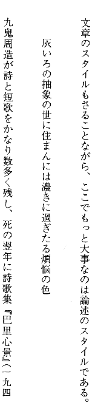
▲１行目と３行目の改行行頭は、１字分下げてあります。２行目は、３字分下がっています。
記入例：
…ここでもっと大事なのは論述のスタイルである。
［＃３字下げ］灰いろの抽象の世に住まんには濃きに過ぎたる煩悩の色
九鬼周造が詩と短歌をかなり数多く残し、…
…ここでもっと大事なのは論述のスタイルである。<br />
<br />
<div class="jisage_3" style="margin-left: 3em">灰いろの抽象の世に住まんには濃きに過ぎたる煩悩の色</div>
<br />
九鬼周造が詩と短歌をかなり数多く残し、…
●１行だけの字下げの例。九鬼周造「九鬼周造随筆集」岩波文庫、岩波書店、1991（平成3）年9月17日、192ページ
１行だけの字下げは、ブロックの注記を用いて、次のように書くこともできます。
…ここでもっと大事なのは論述のスタイルである。
［＃ここから３字下げ］
灰いろの抽象の世に住まんには濃きに過ぎたる煩悩の色
［＃ここで字下げ終わり］
九鬼周造が詩と短歌をかなり数多く残し、…
…ここでもっと大事なのは論述のスタイルである。<br />
<br />
<div class="jisage_3" style="margin-left: 3em">
灰いろの抽象の世に住まんには濃きに過ぎたる煩悩の色<br />
</div>
<br />
九鬼周造が詩と短歌をかなり数多く残し、…
推奨形式は、［＃○字下げ］としますが、前後にブロックの字下げが続く中で、当該箇所のみが１行であるといった場合には、ブロックに対する注記を用いて、形式を揃えてもかまいません。
ブロックでの字下げ
字下げされているブロックの１行前に、［＃ここから○字下げ］と書き込んでください。
○には、ブロック全体が何字分下げてあるかを、全角のアラビア数字で書き込んでください。
字下げされたブロックが終わったら、改行して［＃ここで字下げ終わり］と書いてください。
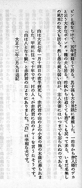
▲２行あきの後のブロック全体が、５字分下がっています。
記入例：
…然し愚な純な弱い白が、主人夫妻にはいつまでも忘られぬのである。
［＃ここから５字下げ］
白は大正七年一月十四日の夜半病死し、赤沢君の山の上の小家の梅の木陰に葬られました。甲州に往って十年です。村の人々が赤沢君に白のクヤミを言うたそうです。「白は人となり候」と赤沢君のたよりにありました。「白」は幸福な犬です。
大正十二年二月九日追記
［＃ここで字下げ終わり］
［＃改ページ］
…然し愚な純な弱い白が、主人夫妻にはいつまでも忘られぬのである。<br />
<br />
<br />
<div class="jisage_5" style="margin-left: 5em">
白は大正七年一月十四日の夜半病死し、赤沢君の山の上の小家の梅の木陰に葬られました。甲州に往って十年です。村の人々が赤沢君に白のクヤミを言うたそうです。「白は人となり候」と赤沢君のたよりにありました。「白」は幸福な犬です。<br />
大正十二年二月九日追記<br />
</div>
<span class="notes">［＃改ページ］</span><br />
●ブロックの字下げの例1。徳冨健次郎「みみずのたはこと（上）」岩波文庫、岩波書店、1996（平成8）年12月10日第25刷、95ページ
ブロックの字下げが、異なった字数分で連続しているときは、あいだにくる［＃ここで字下げ終わり］は略します。
２字下げに４字下げが続いている場合なら、［＃ここから２字下げ］…［＃ここから４字下げ］…［＃ここで字下げ終わり］の順で注記してください。
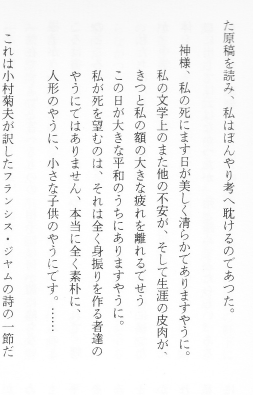
▲１行あけてまず、２字下げ。次の行からは、４字分下がっています。
記入例：
…た原稿を読み、私はぼんやり考へ耽けるのであつた。
［＃ここから２字下げ］
神様、私の死にます日が美しく清らかでありますやうに。
［＃ここから４字下げ］
私の文学上のまた他の不安が、そして生涯の皮肉が、きつと私の額の大きな疲れを離れるでせう
この日が大きな平和のうちにありますやうに。
私が死を望むのは、それは全く身振りを作る者達のやうにではありません、本当に全く素朴に、
人形のやうに、小さな子供のやうにです。……
［＃ここで字下げ終わり］
これは小村菊夫が訳したフランシス・ジヤムの詩の一節だ…
…た原稿を読み、私はぼんやり考へ耽けるのであつた。<br />
<br />
<div class="jisage_2" style="margin-left: 2em">
神様、私の死にます日が美しく清らかでありますやうに。<br />
</div><div class="jisage_4" style="margin-left: 4em">
私の文学上のまた他の不安が、そして生涯の皮肉が、きつと私の額の大きな疲れを離れるでせう<br />
この日が大きな平和のうちにありますやうに。<br />
私が死を望むのは、それは全く身振りを作る者達のやうにではありません、本当に全く素朴に、<br />
人形のやうに、小さな子供のやうにです。……<br />
</div>
<br />
これは小村菊夫が訳したフランシス・ジヤムの詩の一一節だ…
●ブロックの字下げの例2。原民喜「日本の原爆文学1」ほるぷ出版、1983（昭和58）年8月1日初版第1刷発行、205ページ
凹凸の複雑な字下げ
改行行頭と、折り返し以降の行頭がそろっていない、凹凸のある組み版がおこなれている際には、［＃ここから○字下げ、折り返して●字下げ］という書式を用いてください。
凹凸に字下げされているブロックの１行前に、［＃ここから○字下げ、折り返して●字下げ］と書いてください。
○には、改行行頭で何字分字下げしてあるかを、全角のアラビア数字で書き込んでください。●には、折り返し後の行頭が何字分字下げしてあるかを、全角のアラビア数字で書き込んでください。
字下げされたブロックが終わったら、改行して［＃ここで字下げ終わり］と書き込んでください。
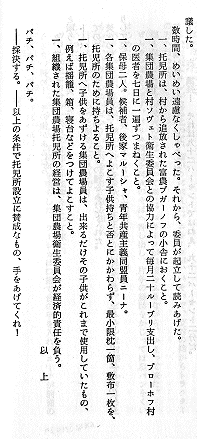
▲３行目からは、改行行頭で２字分、折り返したところでは３字分下げてあります。
記入例：
数時間、めいめい遠慮なくしゃべった。それから、委員が起立して読みあげた。
［＃ここから２字下げ、折り返して３字下げ］
一、托児所は、村から追放された富農ブガーノフの小舎におくこと。
一、集団農場と村ソヴェト衛生委員会との協力によって毎月二十ルーブリ支出し、ブローホフ村の医者を七日に一遍ずつまねくこと。
一、保母二人。候補者、後家マルーシャ、青年共産主義同盟員ニーナ。
一、各集団農場員は、托児所へよこす子供持ちと否とにかかわらず、最小限枕一箇、敷布一枚を、托児所のために持ちよること。
一、托児所へ子供をあずける集団農場員は、出来るだけその子供がこれまで使用していたもの、例えば揺籠、箱、寝台などをつけてよこすこと。
一、組織された集団農場托児所の経営は、集団農場衛生委員会が経済的責任を負う。
［＃ここで字下げ終わり］
［＃地から４字上げ］以上
パチ、パチ、パチ。
数時間、めいめい遠慮なくしゃべった。それから、委員が起立して読みあげた。<br />
<div class="burasage" style="margin-left: 3em; text-indent: -1em;">一、托児所は、村から追放された富農ブガーノフの小舎におくこと。</div>
<div class="burasage" style="margin-left: 3em; text-indent: -1em;">一、集団農場と村ソヴェト衛生委員会との協力によって毎月二十ルーブリ支出し、ブローホフ村の医者を七日に一遍ずつまねくこと。</div>
<div class="burasage" style="margin-left: 3em; text-indent: -1em;">一、保母二人。候補者、後家マルーシャ、青年共産主義同盟員ニーナ。</div>
<div class="burasage" style="margin-left: 3em; text-indent: -1em;">一、各集団農場員は、托児所へよこす子供持ちと否とにかかわらず、最小限枕一箇、敷布一枚を、托児所のために持ちよること。</div>
<div class="burasage" style="margin-left: 3em; text-indent: -1em;">一、托児所へ子供をあずける集団農場員は、出来るだけその子供がこれまで使用していたもの、例えば揺籠、箱、寝台などをつけてよこすこと。</div>
<div class="burasage" style="margin-left: 3em; text-indent: -1em;">一、組織された集団農場托児所の経営は、集団農場衛生委員会が経済的責任を負う。</div>
<div class="chitsuki_4" style="text-align:right; margin-right: 4em">以上</div>
パチ、パチ、パチ。<br />
●凹凸の字下げの例１。宮本百合子「宮本百合子全集 第四巻」新日本出版社、1986（昭和61）年3月20日第5刷、258ページ
※左の組み版例では、地寄せされた部分の字間が、「以 上」と空白で割ってあります。こうした体裁を整えるための単語内の空白は、音声変換などのコンピューターによるファイル処理の際の不都合を考慮して、記入例のように省いて入力します。
改行した行頭は天付きで、折り返し以降が何文字か字下げしてある場合には特に、［＃ここから改行天付き、折り返して○字下げ］という書式を用いてください。
凹凸に字下げされているブロックの１行前に、［＃ここから改行天付き、折り返して○字下げ］と書き込んでください。
○には、折り返しの行頭が何字分字下げしてあるかを、全角のアラビア数字で書き込んでください。
字下げされたブロックが終わったら、改行して［＃ここで字下げ終わり］と書き込んでください。
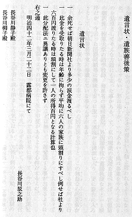
▲「一」から始まる箇条書きのブロックでは、改行行頭にあきはありませんが、折り返すと１字分下げてあります。
記入例：
［＃５字下げ］遺言状［＃「遺言状」は中見出し］
［＃ここから改行天付き、折り返して１字下げ］
一 余死せば朝日新聞社より多少の涙金渡るべし
一 此金を受取りたる時は年齢に拘らず平均に六人の家族に頭割りにすべし例せば社より六百円渡りたる時は頭割にして一人の所得百円となる計算也
一 此分配法ニ異議ありとも変更を許さず
［＃ここで字下げ終わり］
右之通
［＃２字下げ］明治四十二年三月二十二日 露都病院にて
［＃地から２字上げ］長谷川辰之助
［＃ここから１字下げ］
長谷川静子殿
長谷川柳子殿
［＃ここで字下げ終わり］
<div class="jisage_5" style="margin-left: 5em"><h4 class="naka-midashi"><a class="midashi_anchor" id="midashi250">遺言状</a></h4></div>
<br />
<div class="burasage" style="margin-left: 1em; text-indent: -1em;">一 余死せば朝日新聞社より多少の涙金渡るべし</div>
<div class="burasage" style="margin-left: 1em; text-indent: -1em;">一 此金を受取りたる時は年齢に拘らず平均に六人の家族に頭割りにすべし例せば社より六百円渡りたる時は頭割にして一人の所得百円となる計算也</div>
<div class="burasage" style="margin-left: 1em; text-indent: -1em;">一 此分配法ニ異議ありとも変更を許さず</div>
右之通<br />
<div class="jisage_2" style="margin-left: 2em">明治四十二年三月二十二日 露都病院にて</div>
<div class="chitsuki_2" style="text-align:right; margin-right: 2em">長谷川辰之助</div>
<div class="jisage_1" style="margin-left: 1em">
長谷川静子殿<br />
長谷川柳子殿<br />
</div>
●凹凸の字下げの例２。二葉亭四迷「平凡・私は懐疑派だ」講談社文芸文庫、講談社、1997（平成9）年12月10日第1刷、274ページ
ブロックの字下げ注記が連続するところでは、途中に［＃ここで字下げ終わり］を書き込む必要はありません。
［＃ここで字下げ終わり］は、ブロックの字下げ注記が最終的に終わるところにだけ、書き込んでください。
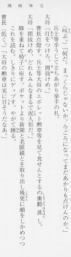
▲ブロックの字下げが、連続しています。大将と曹長の台詞は、この引用箇所からはわかりませんが、折り返し後、１字下げのレイアウトで通っています。
記入例：
［＃ここから２字下げ］
（叫《さけ》ぶ。）「何だ。まっくらじゃないか。今ごろになってまだあかりも点《つ》けんのか。」
兵士等辛うじて立ちあがり挙手の礼。
［＃ここから改行天付き、折り返して１字下げ］
大将「灯《あかり》をつけろ、間抜《まぬ》けめ。」
［＃ここから２字下げ］
曹長点燈す。兵士等大将のエボレット勲章等を見て食せんとするの衝動《しょうどう》甚《はなはだ》し。
［＃ここから改行天付き、折り返して１字下げ］
大将「間抜けめ、どれもみんなまるで泥《どろ》人形だ。」
［＃ここから２字下げ］
脚を重ねて椅子《いす》に座す。ポケットより新聞と老眼鏡とを取り出し殊更《ことさら》に顔をしかめつつこれを読む。しきりにゲップす。やがて睡《ねむ》る。
［＃ここから改行天付き、折り返して１字下げ］
曹長（低く。）「大将の勲章は実に甘《うま》そうだなあ。」
［＃ここで字下げ終わり］
<div class="jisage_2" style="margin-left: 2em">
（<ruby><rb>叫</rb><rp>（</rp><rt>さけ</rt><rp>）</rp></ruby>ぶ。）「何だ。まっくらじゃないか。今ごろになってまだあかりも<ruby><rb>点</rb><rp>（</rp><rt>つ</rt><rp>）</rp></ruby>けんのか。」<br />
兵士等辛うじて立ちあがり挙手の礼。<br />
</div>
<div class="burasage" style="margin-left: 1em; text-indent: -1em;">大将「<ruby><rb>灯</rb><rp>（</rp><rt>あかり</rt><rp>）</rp></ruby>をつけろ、<ruby><rb>間抜</rb><rp>（</rp><rt>まぬ</rt><rp>）</rp></ruby>けめ。」</div>
<div class="jisage_2" style="margin-left: 2em">
曹長点燈す。兵士等大将のエボレット勲章等を見て食せんとするの<ruby><rb>衝動</rb><rp>（</rp><rt>しょうどう</rt><rp>）</rp></ruby><ruby><rb>甚</rb><rp>（</rp><rt>はなはだ</rt><rp>）</rp></ruby>し。<br />
</div>
<div class="burasage" style="margin-left: 1em; text-indent: -1em;">大将「間抜けめ、どれもみんなまるで<ruby><rb>泥</rb><rp>（</rp><rt>どろ</rt><rp>）</rp></ruby>人形だ。」</div>
<div class="jisage_2" style="margin-left: 2em">
脚を重ねて<ruby><rb>椅子</rb><rp>（</rp><rt>いす</rt><rp>）</rp></ruby>に座す。ポケットより新聞と老眼鏡とを取り出し<ruby><rb>殊更</rb><rp>（</rp><rt>ことさら</rt><rp>）</rp></ruby>に顔をしかめつつこれを読む。しきりにゲップす。やがて<ruby><rb>睡</rb><rp>（</rp><rt>ねむ</rt><rp>）</rp></ruby>る。<br />
</div>
<div class="burasage" style="margin-left: 1em; text-indent: -1em;">曹長（低く。）「大将の勲章は実に<ruby><rb>甘</rb><rp>（</rp><rt>うま</rt><rp>）</rp></ruby>そうだなあ。」</div>
●ブロックの字下げが連続する例。宮沢賢治「新編 銀河鉄道の夜」、新潮文庫、新潮社、1990（平成2）年5月15日3刷、249ページ
ブロックで字下げした部分に隣り合って、地付き・地寄せが続くところでは、必ずあいだに［＃ここで字下げ終わり］を書き込んでください。
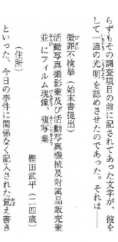
▲２字下げされたブロックに隣り合って、地付きが続いています。
記入例：
…一道《いちどう》の光明《こうみょう》を認めさせたのであった。それは――
［＃ここから２字下げ］
微罪《びざい》不検挙（始末書提出）
活動写真撮影業及び活動写真機械及附属品販売業｜並《ならび》にフィルム現像《げんぞう》、複写業《ふくしゃぎょう》
［＃ここで字下げ終わり］
［＃地付き］樫田武平（二四歳）
（住所）
といった、今日の事件に関係なく記入された覚《おぼ》え書き…
…<ruby><rb>一道</rb><rp>（</rp><rt>いちどう</rt><rp>）</rp></ruby>の<ruby><rb>光明</rb><rp>（</rp><rt>こうみょう</rt><rp>）</rp></ruby>を認めさせたのであった。それは――</div>
<br />
<div class="jisage_2" style="margin-left: 2em">
<ruby><rb>微罪</rb><rp>（</rp><rt>びざい</rt><rp>）</rp></ruby>不検挙（始末書提出）<br />
活動写真撮影業及び活動写真機械及附属品販売業<ruby><rb>並</rb><rp>（</rp><rt>ならび</rt><rp>）</rp></ruby>にフィルム<ruby><rb>現像</rb><rp>（</rp><rt>げんぞう</rt><rp>）</rp></ruby>、<ruby><rb>複写業</rb><rp>（</rp><rt>ふくしゃぎょう</rt><rp>）</rp></ruby><br />
</div>
<div class="chitsuki_0" style="text-align:right; margin-right: 0em">樫田武平（二四歳）</div>
（住所）<br />
といった、今日の事件に関係なく記入された<ruby><rb>覚</rb><rp>（</rp><rt>おぼ</rt><rp>）</rp></ruby>え書き…
●字下げブロックと地付きが隣り合う例。海野十三「海野十三全集 第1巻 遺言状放送」三一書房、1990（平成2）年10月15日第1版第1刷、46ページ
さまざまな書き方ができる場合の選択
字下げ箇所の入力に際しては、「１行だけの注記」を組み合わせる方法、「ブロックの注記」を用いる方法に加えて、字下げ分の空白を入力し、注記なしですませる方法も選択肢として想定できます。
複数の書き方が想定できるケースでは、次の優先順位に従って、処理法を選んでください。
１ 「注記する」処理法を優先し、「字下げ分の空白を入れる」方法は、原則として避ける。（１行が短くなる表示環境で読まれる場合を念頭においた方針です。）
２ 注記法の選択にあたっては、組み体裁のイメージを伝えやすいことと、簡潔に表現できるものを優先する。
以下に例示したケースでは、最後の３行を次のようないくつかの方法で処理できます。
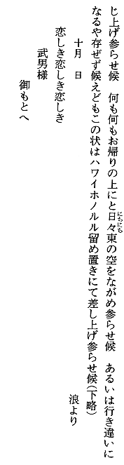
記入例：
［＃２字下げ］恋しき恋しき恋しき
［＃４字下げ］武男様
［＃７字下げ］御もとへ
<div class="jisage_2" style="margin-left: 2em">恋しき恋しき恋しき</div>
<div class="jisage_4" style="margin-left: 4em">武男様</div>
<div class="jisage_7" style="margin-left: 7em">御もとへ</div>
［＃ここから２字下げ］
恋しき恋しき恋しき
武男様
御もとへ
［＃ここで字下げ終わり］
<div class="jisage_2" style="margin-left: 2em">
恋しき恋しき恋しき<br />
武男様<br />
御もとへ<br />
</div>
●さまざまな書き方ができる場合の選択の例。徳富蘆花「小説 不如帰」岩波文庫、岩波書店、1999（平成11）年8月18日、60ページ
このケースでは、イメージを伝えやすく、簡潔に表現できる、後者を推奨します。
ただし、詩歌などで、１行の文字数が10字程度におさまるようなケースに限っては、注記を行わず、字下げ分の空白を入れて処理することを許容します。（文字数が十分短ければ、１行の表示文字数が短い環境下でも、問題が生じにくいだろうとの判断にもとづいた方針です。）
地付き
地付き処理されている文字列の前に、［＃地付き］と書き込んでください。
地付き処理された文字列だけが、独立した行の下に位置しているときは、改行してまず［＃地付き］と書き込み、続けて、その文字列を入力してください。
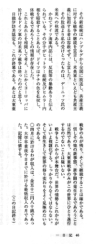
▲行をあらためて、新しい行の下に「（この日記終り）」と組まれています。
記入例
◯四月に於けるわが収入は、金五十二円八十銭であった。大学卒業後今日までに於ける最低収入の月であった。記憶に値する。
［＃地付き］（この日記終り）
◯四月に於けるわが収入は、金五十二円八十銭であった。大学卒業後今日までに於ける最低収入の月であった。記憶に値する。<br />
<div class="chitsuki_0" style="text-align:right; margin-right: 0em">（この日記終り）</div>
●地付きの例１。海野十三「海野十三全集 別巻2 日記・書簡・雑纂」三一書房、1993（平成5）年1月31日第1版第1刷、46ページ
改行なしで続く文字列の最後の一部が、地付きになっているときは、［＃地付き］と書き込んだ後に、対象となっている文字列を入れてください。
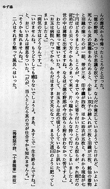
▲最後の行の下に、行をあらためることなく「（掲載誌不詳、『十番随筆』所収）」と組まれています。
記入例
「そうかも知れませんね。」
二人はそれぎり黙って風呂へはいった。［＃地付き］（掲載誌不詳、『十番随筆』所収）
「そうかも知れませんね。」<br />
二人はそれぎり黙って風呂へはいった。<div class="chitsuki_0" style="text-align:right; margin-right: 0em">（掲載誌不詳、『十番随筆』所収）</div>
●地付きの例２。岡本綺堂「綺堂むかし語り」光文社時代小説文庫、光文社、1995（平成7）年8月20日初版1刷、111ページ
ブロックで地付き処理されている場合は、前後に［＃ここから地付き］［＃ここで地付き終わり］と書き込んでください。
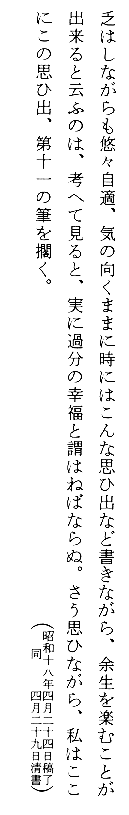
▲丸括弧付きの２行が、地付きで組まれています。
記入例
…さう思ひながら、私はここにこの思ひ出、第十一の筆を擱く。
［＃ここから地付き］
┌昭和十八年四月二十四日稿了┐
└ 同 四月二十九日清書┘
［＃ここで地付き終わり］
…さう思ひながら、私はここにこの思ひ出、第十一の筆を擱く。<br />
<div class="chitsuki_0" style="text-align:right; margin-right: 0em">
┌昭和十八年四月二十四日稿了┐<br />
└ 同 四月二十九日清書┘<br />
</div>
●ブロックで地付き処理されている際の注記。「日本の名随筆 別巻96 大正」作品社、1999（平成11）年2月25日、86ページ
なお、記入例では、２行にわたる丸括弧を、けい線素片に置き換えてある。
地寄せ
地寄せされている文字列の前に、［＃地から○字上げ］と書き込んでください。
○には、地から何字分あけてあるかを、全角のアラビア数字で書き込んでください。
地寄せされた文字列だけが、独立した行の下に位置しているときは、改行してまず［＃地から○字上げ］と書き込み、続けて、その文字列を入れてください。
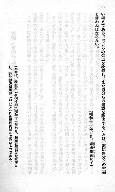
▲３行目の「（昭和十一年五月、麻布飯倉《あざぶいいくら》にて）」が、行をあらためて地寄せされています。
記入例：
…い考えである。自分らの欠点を改善し、また自分らの過誤を除去することは、実に自分らの幸福と言わねばならない。
［＃地から２字上げ］（昭和十一年五月、麻布飯倉《あざぶいいくら》にて）
…い考えである。自分らの欠点を改善し、また自分らの過誤を除去することは、実に自分らの幸福と言わねばならない。<br />
<div class="chitsuki_2" style="text-align:right; margin-right: 2em">（昭和十一年五月、<ruby><rb>麻布飯倉</rb><rp>（</rp><rt>あざぶいいくら</rt><rp>）</rp></ruby>にて）</div>
●地寄せの例１。島崎藤村「夜明け前 第一部（下）」岩波文庫、岩波書店、1995（平成7）年12月15日第26刷、310ページ
改行なしで続く文字列の最後の一部が、地寄せになっているときは、［＃地から○字上げ］と書き込んだ後に、対象となっている文字列を入れてください。
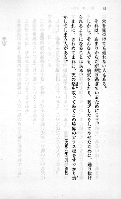
▲最後の行の下に、行をあらためることなく「（大正九年五月、渋柿）」が地寄せされています。
記入例
まれに、きわめてまれに、天の焔《ほのお》を取って来てこの境界のガラス板をすっかり熔《と》かしてしまう人がある。［＃地から１字上げ］（大正九年五月、渋柿）
［＃改ページ］
まれに、きわめてまれに、天の<ruby><rb>焔</rb><rp>（</rp><rt>ほのお</rt><rp>）</rp></ruby>を取って来てこの境界のガラス板をすっかり<ruby><rb>熔</rb><rp>（</rp><rt>と</rt><rp>）</rp></ruby>かしてしまう人がある。<div class="chitsuki_1" style="text-align:right; margin-right: 1em">（大正九年五月、渋柿）</div>
<span class="notes">［＃改ページ］</span><br />
●地寄せの例２。寺田寅彦「柿の種」岩波文庫、岩波書店、1997（平成9）年10月15日9刷、12ページ
ブロックで地寄せ処理されている場合は、前後に［＃ここから地から○字上げ］［＃ここで字上げ終わり］と書き込んでください。
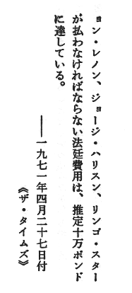
▲最後の２行が、地寄せされています。
記入例
…推定十万ポンドに達している。
［＃ここから地から１字上げ］
――一九七一年四月二十七日付
≪ザ・タイムズ≫
［＃ここで字上げ終わり］
…推定十万ポンドに達している。<br />
<div class="chitsuki_1" style="text-align:right; margin-right: 1em">
――一九七一年四月二十七日付<br />
≪ザ・タイムズ≫<br />
</div>
●ブロックで字上げ処理が行われている際の注記例。「ビートルズ ラヴ・ユーメイク〔下〕」ピーター・ブラウン、スティーヴン・ゲインズ、小林宏明訳、早川書房、1984（昭和59）年11月15日、228ページ
なお、記入例では、ルビ記号と重なる二重山括弧を、学術記号の「≪」（非常に小さい、2-67）と「≫」（非常に大きい、2-68）に置き換えてある。
目次にもどる。